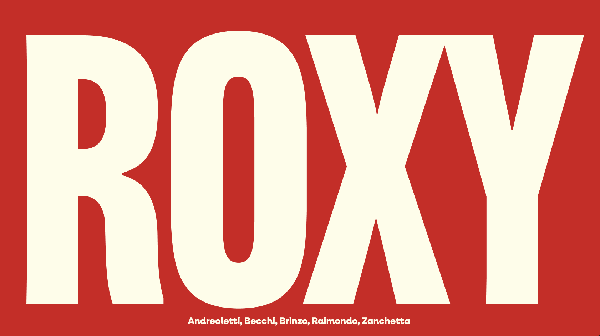

AM Decor is a building firm operating in Nothern Italy.
The project involves the reimagining of the logo, definition of typography, colors and main graphic elements.
Furthermore, new shop signs and vehicle stickers are designed, in addition to the official website.

The chosen color palette and visual elements reflect a daring yet elegant aesthetic, with vibrant reds and metallic accents as the core colors.

The redesigned logo embraces minimalism while preserving the brand’s iconic boldness, ensuring instant recognizability.
Helvetica Light
The typography features clean, sans-serif fonts to communicate modernity and sophistication, paired with occasional decorative typefaces for emphasis.

These mockups showcase the application of the rebrand across packaging, digital media, and physical touchpoints, emphasizing consistency and boldness.

